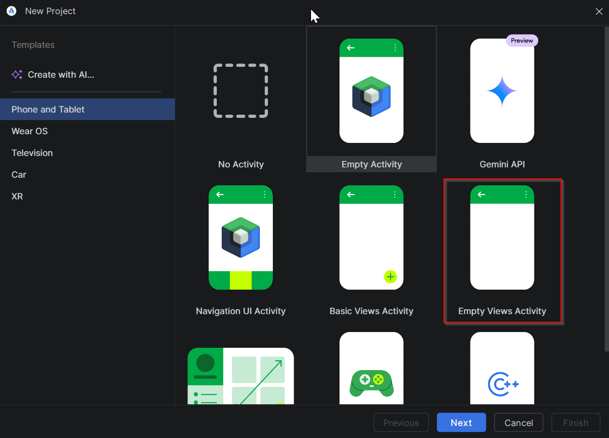
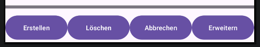
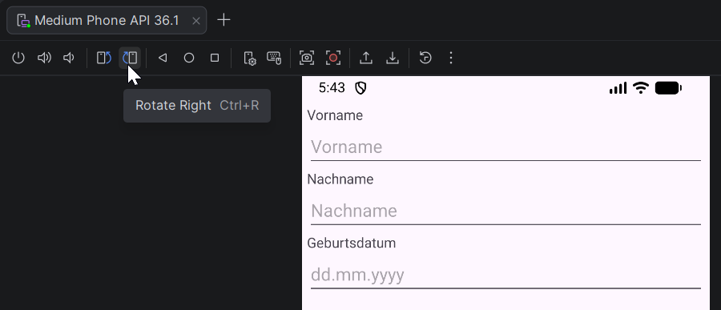

Modul 335 Mobile Applikationen, Block 02. Zeitbudget 65 Minuten. Version 3 vom 11.08.2026.
findViewById und Klickbehandlung.Du gibst nichts ab. Das Blatt gehört dir. Prüf deine Arbeit an der Vergleichsliste im Lösungsmaterial. Am Prüfungstag hilft dir nur, was du selbst gebaut hast.
Fertig bist du, wenn das stimmt:
Mach von beidem einen Screenshot für dich selbst, dann kannst du am Tag 5 nachschauen, wie weit du warst.
Dazu der 02B Wissenscheck. Er ist unbenotet und beliebig wiederholbar.
Warum dieser Bildschirm. Er ist kein Beispiel, das du nachher wegwirfst. Genau diese Form, also Eingabefelder oben und eine Buttonreihe unten, baust du am Tag 4 wieder, dann für eine Quizfrage. Und in der Leistungsbeurteilung baust du sie ein drittes Mal. Wer diese Form einmal von Hand gebaut hat, baut sie beim zweiten Mal in zehn Minuten.
Du baust einen Bildschirm zur Erfassung einer Person. Oben stehen drei Eingabefelder mit Beschriftung. Unten kleben vier Buttons am unteren Rand, alle gleich breit. Dazwischen liegt ein Trennstreifen.
Der Bildschirm macht noch nichts. Kein Klick tut etwas. Das ist Absicht. Heute geht es nur um das Layout.
Das sind alle Bausteine, die du für diesen Auftrag brauchst. Mehr nicht.
Welche Angaben Pflicht sind:
| Angabe | Pflicht bei | Bemerkung |
|---|---|---|
| android:id | jedem Element, das du im Code brauchst oder das als Anker dient | Namenskonvention siehe unten |
| android:layout_width | jedem Element | immer |
| android:layout_height | jedem Element | immer |
| app:layout_constraint... | jedem direkten Child des ConstraintLayout | mindestens eine waagrechte und eine senkrechte |
| android:orientation | jedem LinearLayout | ohne Angabe nimmt Android waagrecht an |
| android:inputType | jedem EditText | bestimmt die Tastatur |
Im Modul 335 gilt eine feste Regel. Der Klassenname des Controls bestimmt das Präfix.
TextView wird tv, EditText wird et, LinearLayout wird ll.Button wird btn, View wird vw.Bezeichner sind englisch, sichtbare Texte deutsch. Also btnCancel mit der Beschriftung "Abbrechen".
Denk kurz darüber nach, bevor du anfängst. Aufschreiben musst du nichts davon. Es geht nicht um richtig oder falsch, sondern darum, dass du eine Erwartung hast, bevor du loslegst.
match_parent. Im ConstraintLayout schreibst du 0dp. Warum kann match_parent im ConstraintLayout nicht dasselbe leisten?View ohne jeden Inhalt. Warum braucht er trotzdem eine Höhe?Diese vier Fragen kommen im Wissenscheck wieder. Dort bekommst du zu jeder Antwort sofort eine Rückmeldung. Dasselbe gilt für das, was du in B2 und C4 beobachtest. Wer hier kurz nachdenkt und dort genau hinschaut, hat den Wissenscheck in fünf Minuten durch.
| Baustein | Wofür |
|---|---|
| View | Ein Rechteck ohne Inhalt. Hier der Trennstreifen |
A1Neues Projekt anlegen.
| Vorlage | Empty Views Activity |
| Name | M335 Formular |
| Paket | ch.wiss.m335.formular |
| Sprache | Java |
| Minimum SDK | API 26 |
| Build configuration language | Kotlin DSL (build.gradle.kts) |
Achtung bei der Vorlage. Empty Activity und Empty Views Activity stehen direkt nebeneinander. Du brauchst die mit Views. Die andere ist Compose und hat kein XML-Layout.

Warte, bis der Gradle Sync unten fertig ist. Das dauert ein bis drei Minuten. Fang nicht vorher an zu tippen.
| Baustein | Wofür |
|---|---|
| ConstraintLayout | Der Root-Container. Children werden mit Constraints an Kanten geheftet |
| TextView | Beschriftung |
A2Die Hello-World-TextView entfernen.
Öffne app/src/main/res/layout/activity_main.xml und wechsle oben rechts auf Code. Lösche die ganze <TextView ... />. Das Root-Element bleibt stehen. Es heisst androidx.constraintlayout.widget.ConstraintLayout und hat die id main.
Diese id main brauchst du später noch. Merke sie dir.
| Baustein | Wofür |
|---|---|
| LinearLayout | Container, der seine Children stur untereinander oder nebeneinander stellt |
A3Den Formularbereich anlegen.
Setze in das ConstraintLayout ein LinearLayout. Es hält die drei Feldpaare untereinander.
<LinearLayout android:id="@+id/llForm" android:layout_width="0dp" android:layout_height="wrap_content" android:orientation="vertical" app:layout_constraintTop_toTopOf="parent" app:layout_constraintStart_toStartOf="parent" app:layout_constraintEnd_toEndOf="parent" > <!-- hier kommen die Feldpaare hinein --> </LinearLayout>
Lies die Breite genau. 0dp heisst hier nicht "null breit". Im ConstraintLayout heisst 0dp: spann dich zwischen deine beiden waagrechten Constraints. Die sind Start an Start und Ende an Ende des Parent. Also über die ganze Breite.
| Baustein | Wofür |
|---|---|
| EditText | Eingabefeld |
A4Das erste Feldpaar. Diesen Block bekommst du vorgegeben.
<TextView android:id="@+id/tvFirstName" android:layout_width="match_parent" android:layout_height="wrap_content" android:text="Vorname" /> <EditText android:id="@+id/etFirstName" android:layout_width="match_parent" android:layout_height="wrap_content" android:inputType="textPersonName" android:hint="Vorname" />
Hier steht match_parent, und das ist richtig. Du bist jetzt im LinearLayout, nicht mehr direkt im ConstraintLayout. Im LinearLayout gibt es keine Constraints, dort heisst "so breit wie der Container" eben match_parent.
Das gelbe Warndreieck bei android:text="Vorname" ist normal. Android Studio hätte gern eine String-Ressource. Das ist heute kein Thema.
A5Die zwei weiteren Feldpaare. Ab hier selbst.
| Beschriftung | id TextView | id EditText | inputType | hint |
|---|---|---|---|---|
| Nachname | tvLastName | etLastName | textPersonName | Nachname |
| Geburtsdatum | tvBirthDate | etBirthDate | date | dd.mm.yyyy |
Bau sie nach dem Muster von A4. Die Reihenfolge ist Beschriftung, dann Feld, dann Beschriftung, dann Feld.
So prüfst du Teil A.
inputType nicht.| Baustein | Wofür |
|---|---|
| Button | Schaltfläche |
B1Die Buttonreihe unten anheften.
Ein zweites LinearLayout, diesmal waagrecht, geklebt an den unteren Rand.
<LinearLayout android:id="@+id/llButtons" android:layout_width="0dp" android:layout_height="wrap_content" android:orientation="horizontal" app:layout_constraintStart_toStartOf="parent" app:layout_constraintEnd_toEndOf="parent" app:layout_constraintBottom_toBottomOf="parent"> </LinearLayout>
Beachte: keine Constraint nach oben. Das Element hängt nur unten. Genau darum bleibt es unten kleben, egal wie lang das Formular oben wird.
B2Vier Buttons hinein. Zuerst absichtlich falsch.
Schreib alle vier Buttons mit wrap_content. Ja, wirklich. Du machst das gleich wieder rückgängig, aber du sollst zuerst sehen, was passiert.
<Button android:id="@+id/btnCancel" android:layout_width="wrap_content" android:layout_height="wrap_content" android:layout_weight="1" android:maxLines="1" android:textSize="11sp" android:text="Abbrechen" />
| id | Beschriftung |
|---|---|
| btnCancel | Abbrechen |
| btnExtend | Erweitern |
| btnCreate | Erstellen |
| btnDelete | Löschen |
Zwei Zeilen, die du hier zum ersten Mal siehst. android:maxLines="1" verbietet dem Button, seine Beschriftung auf zwei Zeilen zu brechen. android:textSize="11sp" macht die Schrift kleiner. Beides brauchst du, sobald Buttons nebeneinander stehen. Warum, steht im Kasten unter B3.
Starte die App und schau dir die Reihe an. Sag in einem Satz, was du siehst. Genau danach fragt der Wissenscheck. Wer hier nur schnell weiterklickt, rät dort.
B3Jetzt richtig.
Ändere bei allen vier Buttons android:layout_width von wrap_content auf 0dp. Sonst nichts.
Starte erneut. Vergleiche mit deinem Satz aus B2.

Was hier passiert. layout_weight verteilt den übrigen Platz. Mit wrap_content nimmt sich jeder Button zuerst so viel, wie sein Text braucht, und erst der Rest wird verteilt. "Abbrechen" ist lang, "Löschen" ist kurz, also werden die Buttons unterschiedlich breit. Mit 0dp fordert kein Button vorab Platz an. Dann wird die ganze Breite nach dem Gewicht verteilt, und alle vier werden exakt gleich breit.
Warum die Schrift hier auf 11sp steht. Rechne kurz mit. Ein Medium Phone ist rund 400 dp breit. Ein Button reserviert innen links und rechts Polster für sich selbst, zusammen etwa 50 dp.
| Buttons in der Reihe | Breite pro Button | Bleibt für den Text |
|---|---|---|
| drei | rund 133 dp | rund 83 dp |
| vier | rund 100 dp | rund 50 dp |
| fünf | rund 80 dp | rund 30 dp |
"Abbrechen" ist mit neun Buchstaben das längste Wort in deiner Reihe. Es braucht bei 14sp rund 63 dp, bei 13sp rund 58, bei 11sp knapp 50. Bei vier Buttons stehen 50 dp zur Verfügung.
Darum bricht es bei der Vorgabe 14sp um und Android trennt mitten im Wort. Aus Abbrechen wird Abbrech und darunter en. Mit 11sp passt es.
Es passt knapp auf Kante, und das ist eine Schwäche. Die Einheit sp bedeutet "scale-independent pixel". Sie skaliert mit der Schriftgrösse, die der Benutzer in den Systemeinstellungen gewählt hat. Wer dort auf die grösste Schrift stellt, bekommt aus deinen 11sp effektiv das Doppelte. Dann bricht deine Reihe wieder um, obwohl du nichts geändert hast.
Probier es aus, es dauert eine Minute. Im Emulator unter Settings, dann Display, dann Display size and text. Zieh den Regler für die Schriftgrösse nach rechts und schau dir deine App nochmals an.
Deine Beschriftungen sind das Problem, nicht die Anzahl der Buttons.
Wie andere Apps vier und mehr unterbringen. YouTube hat unten fünf Elemente: Home, Shorts, das Plus, Abos und Du. Bei fünf bleiben rund 30 dp pro Element für den Inhalt, und trotzdem passt es.
| Was drin steht | Braucht etwa | Passt in 30 bis 50 dp |
|---|---|---|
| Nur ein Icon | 24 dp | ja, mit Luft |
| Ein kurzes Wort wie Neu, Abo oder Du | 20 bis 30 dp | ja |
| Ein Icon über einem kurzen Wort | rund 30 dp Breite, dafür mehr Höhe | ja, weil beide untereinander stehen |
| Ein Icon neben einem kurzen Wort | 24 plus 30 plus Abstand | nein |
| Ein langes Wort wie Abbrechen | 50 bis 63 dp | nur ganz knapp, und nur bei kleiner Schrift |
Also: die Anzahl ist nicht die Grenze. Der Platz pro Element ist die Grenze, und der Inhalt muss hineinpassen. Wer vier oder fünf Aktionen braucht, nimmt Icons, kürzere Wörter, oder stapelt Icon und Wort übereinander. Wären es bei YouTube fünfmal "Abbrechen", bräche es genauso wie bei dir mit 14sp.
Wir bleiben heute bei Text ohne Icons, weil es in diesem Auftrag um Constraints und Gewichte geht. Icons kommen später.
B4Der Trennstreifen.
Ein Rechteck ohne Inhalt, direkt über der Buttonreihe.
<View android:id="@+id/vwDivider" android:layout_width="0dp" android:layout_height="5dp" android:layout_marginBottom="8dp" android:background="#79747E" app:layout_constraintStart_toStartOf="parent" app:layout_constraintEnd_toEndOf="parent" app:layout_constraintBottom_toTopOf="@id/llButtons" />
Zwei Dinge sind neu.
5dp. wrap_content ginge nicht, denn es gibt keinen Inhalt, um den herum gewickelt werden könnte. Der Streifen wäre unsichtbar.parent, sondern auf ein Geschwisterelement: @id/llButtons. Beachte, hier steht @id ohne Plus. Das Plus setzt eine id neu, ohne Plus wird auf eine bestehende verwiesen.So prüfst du Teil B.
C1Rand setzen, so wie man es erwarten würde.
Gib dem Root-Element ConstraintLayout die Zeile:
android:padding="5dp"
Starte die App. Schau genau hin. Ändert sich etwas?
C2Die Ursache finden.
Es ändert sich nichts. Dein XML ist nicht falsch. Es wird überschrieben.
Öffne MainActivity.java. Dort steht ein Block, den die Vorlage erzeugt hat:
ViewCompat.setOnApplyWindowInsetsListener(findViewById(R.id.main), (v, insets) -> { Insets systemBars = insets.getInsets(WindowInsetsCompat.Type.systemBars()); v.setPadding(systemBars.left, systemBars.top, systemBars.right, systemBars.bottom); return insets; });
Lies die Zeile mit setPadding. Sie setzt das Padding auf genau die Werte der Systemleisten. Sie addiert nichts, sie ersetzt. Und sie läuft, nachdem das XML geladen ist. Damit ist dein 5dp weg.
Warum es diesen Block überhaupt gibt. Seit Android 15 zeichnet das System bis unter die Statusleiste oben und die Navigationsleiste unten. Ohne diesen Block läge deine oberste Beschriftung teilweise unter der Uhr. Der Block ist also nicht im Weg, er löst ein echtes Problem. Er hat nur eine Nebenwirkung.
C3Den Rand dort setzen, wo er wirkt.
Nimm die Zeile android:padding="5dp" aus dem XML wieder heraus. Sie ist wirkungslos und damit irreführend.
Erweitere stattdessen den Java-Block so, dass zu jeder Seite dein eigener Rand dazukommt.
final int extraPadding = Math.round(5 * getResources().getDisplayMetrics().density);
Diese Zeile setzt du vor den Listener. Danach benutzt du extraPadding in setPadding und addierst ihn zu jedem der vier Werte. Den genauen Aufruf schreibst du selbst.
Warum die Rechnung mit density nötig ist. Im XML schreibst du dp, und Android rechnet für dich um. In Java nimmt setPadding aber Pixel. Würdest du dort einfach 5 schreiben, wären das 5 echte Pixel. Auf einem heutigen Telefon mit hoher Auflösung ist das ein Rand, den man nicht sieht. density ist der Umrechnungsfaktor des Geräts. Auf einem Medium Phone liegt er bei 2.75, aus 5 dp werden also rund 14 Pixel.
C4Querformat prüfen.
Dreh den Emulator. Der Knopf dafür ist in der Leiste rechts neben dem Emulator, oder mit der Tastenkombination Strg und F11.

Falls sich nichts dreht: in den Emulator-Einstellungen unter Settings muss Auto-rotate screen eingeschaltet sein.
Schau genau hin. Passt noch alles auf den Bildschirm? Überlappt etwas? Ist noch alles erreichbar? Auch danach fragt der Wissenscheck.
So prüfst du Teil C.
android:padding steht nicht mehr im XML.Ohne Vorlage. Die Lösungen findest du im Classroom-Material 02B Lösung - Formular bauen. Schau erst hinein, wenn du es selbst versucht hast.
Ergänze unter dem Geburtsdatum ein Feldpaar für den Wohnort. Die Tastatur soll für eine Adresse passen.
So prüfst du: Die vierte Beschriftung steht unter dem Geburtsdatum, das Feld ist gleich breit wie die anderen drei.
Ändere den Trennstreifen auf 1 dp Höhe und gib ihm zusätzlich 8 dp Abstand nach oben.
So prüfst du: Der Streifen ist ein feiner Strich. Zwischen Streifen und Buttons ist Luft, und darüber auch.
Im Feld Geburtsdatum sollen höchstens zehn Zeichen eingetippt werden können. Finde die passende Angabe selbst.
So prüfst du: Du tippst 15 Ziffern. Nach der zehnten nimmt das Feld nichts mehr an.
Erkläre einem Lerngspänli in eigenen Worten, warum android:layout_width="0dp" im ConstraintLayout etwas völlig anderes bedeutet als im LinearLayout. Nimm dein eigenes Layout als Beispiel und zeig auf beide Stellen.
So prüfst du: Dein Gegenüber kann die Frage danach selbst beantworten, ohne nachzuschauen.
Zuerst die Pflichtaufgabe fertig und lauffähig. Dann erst hier weiter.
Auftrag: Sorg dafür, dass dein Formular auch im Querformat vollständig bedienbar bleibt. Alle Felder müssen erreichbar sein, die Buttons dürfen die Felder nicht verdecken.
Und die Frage, die dazugehört: Nach deiner Lösung, bleibt die Buttonreihe im Querformat immer noch unten kleben, oder scrollt sie mit weg? Begründe, warum es so ist, und ob das für einen Benutzer besser oder schlechter ist.
Keine Musterlösung. Es gibt mehrere richtige Wege. KI darfst du benutzen, aber du musst deine Lösung erklären können.
| Das siehst du | Ursache | Das machst du |
|---|---|---|
| Alles liegt oben links übereinander | Einem Child des ConstraintLayout fehlt eine Constraint | Jedes direkte Child braucht mindestens eine waagrechte und eine senkrechte Constraint |
Rot: cannot resolve symbol '@id/llButtons' | Der Verweis steht im XML vor der Stelle, an der die id vergeben wird, oder die id ist anders geschrieben | Schreibweise vergleichen. Beim Vergeben steht @+id/, beim Verweisen @id/ |
| Die Buttons sind unterschiedlich breit | layout_width steht auf wrap_content | Auf 0dp ändern. Siehe B3 |
| Eine Beschriftung steht auf zwei Zeilen, mitten im Wort getrennt | Der Text ist breiter als der Platz, der dem Button bleibt | android:maxLines="1" und android:textSize="11sp" setzen. Reicht das nicht, ist ein Button zu viel in der Reihe. Siehe der Kasten unter B3 |
| Die Beschriftung ist am Ende abgeschnitten | maxLines wirkt, aber der Platz reicht trotzdem nicht | Kürzere Beschriftung wählen oder einen Button weniger. Abschneiden ist keine Lösung, der Benutzer liest dann Unsinn |
| Der Trennstreifen ist nicht zu sehen | Höhe steht auf wrap_content oder es fehlt android:background | Feste Höhe setzen und eine Farbe geben |
| Die Buttonreihe steht mitten im Bild | Es gibt eine Constraint nach oben | Die obere Constraint entfernen. Nur unten anheften |
| Das Padding im XML wirkt nicht | Der Insets-Listener überschreibt es | Siehe C2 und C3 |
| Die oberste Beschriftung liegt unter der Uhr | Der Insets-Block wurde gelöscht | Wieder einsetzen. Er ist kein Beiwerk |
| Die Zahlen-Tastatur kommt beim falschen Feld | inputType vertauscht | Nur etBirthDate hat date |
Beim Start: Unable to start activity mit InflateException | Das XML ist kaputt, meist ein fehlender schliessender Tag | Stacktrace lesen, drei Schritte aus 01B. Die Zeilennummer steht in der Meldung |
Das Wichtigste aus diesem Auftrag, zum Nachschlagen.
| HANOK | Ziel |
|---|---|
| 1.1 | Ergonomische Standards und Prinzipien der Interaktion kennen und anwenden |
| 1.2 | Design- und Benutzerführungs-Guidelines der Plattform anwenden |
| 3.2 | Framework und APIs der Plattform einsetzen |
Nach diesem Auftrag kannst du:
0dp im ConstraintLayout etwas anderes bedeutet als im LinearLayout.| Zeitbudget | 65 Minuten. Teil A 25, Teil B 18, Teil C 12, Übungen 10 |
| Sozialform | Einzelarbeit. Bei den Denkfragen und Übung 4 zu zweit |
| Aufgabenart | Geführter Aufbau mit zwei Entdeckungsstellen (B2 gegen B3, C1 gegen C2) |
| Voraussetzung | Vorbereitungsauftrag, 01B, 01C, 02A mit den drei Unterlagen |
| KI | In Teil A bis C nicht erlaubt. Bei den Übungen und der Zusatzaufgabe erlaubt |
| Abgabe | keine. Der Wissenscheck des Halbtags genügt |
| Name | Typ | Einstellung |
|---|---|---|
| 02B Auftrag - Formular bauen | Material | Schüler können Datei ansehen. Das ist dieses Dokument |
| 02B Wissenscheck - Formular bauen | Aufgabe mit Quiz | Unbenotet, beliebig oft wiederholbar. Sieben Fragen |
| 02B Lösung - Formular bauen | Material | Schüler können Datei ansehen. Enthält den vollständigen Code als Text und die Vergleichsliste |
Warum es hier kein Arbeitsblatt gibt. Das Produkt dieses Auftrags ist ein laufender Bildschirm, kein Papier. Was die Lernenden schriftlich zeigen müssen, also die vier Denkfragen und die zwei Beobachtungen aus B2 und C4, steckt vollständig im Wissenscheck. Damit gibt es sofortige Rückmeldung und für dich null Korrekturaufwand. Ein Arbeitsblatt gibt es nur dort, wo das Produkt selbst auf Papier entsteht, also bei User Stories, Mockups, Datenmodell und Testfall.
| Art | Was |
|---|---|
| Hardware | Eigenes Notebook, laufender Emulator Medium Phone API 36.1 |
| Software und Tools | Android Studio Quail 2, Patch 1 |
| Dokumente | Wie Apps aufgebaut sind, Layouts verstehen, Constraints verstehen. Alle unter Grundlagen |
| Buch | Android-Apps entwickeln für Einsteiger, Kapitel 4.4 Buttons |
Modul 335 | Tag 1 Nachmittag | Auftrag 02B | Version 3 | 11.08.2026